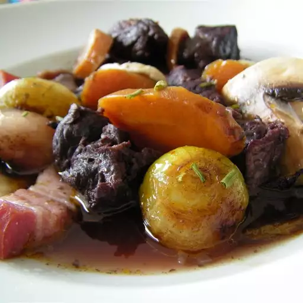

Beef Bourgignon

Description
Beef bourguignon (a.k.a. beef Burgundy) is a French beef stew braised in red wine and beef broth. It also prominently features onions, carrots, and mushrooms. The dish has become synonymous with French cuisine and was famously a favorite of Julia Child.
Ingredients:
- Wine: For true beef bourguignon, you'll need a red Burgundy wine that is produced in the Burgundy region of eastern France with Pinot Noir grapes. Quality counts, and make sure you don't use a bottle you wouldn't want to drink!
- Brandy: Cognac brandy enhances the overall flavor of this complex dish.
- Fresh and canned vegetables: You'll need fresh onions, carrots, and mushrooms. You'll also need a can of tomato paste.
- Olive oil: You'll need olive oil for browning the beef and sauteing the mushrooms.
- Spices and seasonings: This traditional beef bourguignon is seasoned with parsley, a bay leaf, garlic, black peppercorns, garlic, salt, and pepper.
- Beef: This beef bourguignon recipe calls for two pounds of cubed beef chuck roast.
- Bacon: Bacon adds even more meaty flavor to this irresistible beef bourguignon.
- Flour: All-purpose flour helps thicken the bourguignon mixture.
- Broth: Use store-bought or homemade beef broth.
- Butter: Sauté the mushrooms in butter before adding them to the meat mixture.
Steps:
- Start marinating the meat two days in advance. Chill in the fridge.
- Brown the beef in olive oil until browned on all sides, then transfer to a bowl.
- Sauté the bacon in the same skillet, then move the bacon to the beef bowl.
- Deglaze the skillet with a cup of the marinade.
- Sauté the onions and carrots. Move the veggies to the bowl with the meat.
- Add the flour to the skillet and stir until brown.
- Add the tomato paste, garlic, broth, marinade, and salt and pepper.
- Whisk until smooth, then transfer to the bowl with the meat and veggies.
- Transfer the mixture to a baking dish and bake for three hours.
- Sauté the mushrooms, then stir the mushrooms into the bourguignon.